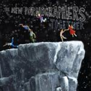
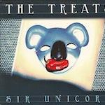
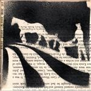
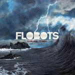
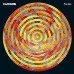
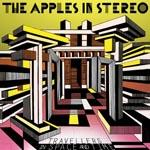

Music Reviews
-

The New Pornographers Together
Gabbie Nirenburg reviews... -

The Treats Sir Unicorn
The Treats are definitely on their way, and this album is nothing to scoff at. Advanced apology for the pun inside.
Jackson White reviews... -

Plants and Animals La La Land
La La Land is many things: a Demi Lovato song, to be zoned out or spaced out, or the loosely conceptual sophomore effort by Plants and Animals. Which one would you pick?
Juan Edgardo Rodríguez wishes they hadn't discovered effects pedals... -

Grass House Plough More Sky EP
Debut E.P from London quartet sees them tackle obscurity and come up smiling.
Daniel Dylan Wray reviews... -

Erykah Badu New Amerykah Part 2: Return Of The Ankh
Erykah Badu's unhinged creativeness is still in fine form on her latest release, and though it may not be politically driven, it's every bit as vital as its predecessor.
Paul Fowler reviews... -

Flobots Survival Story
Seriously, what the fuck was I thinking listening to this album?
Nate Adams thinks this album is the worst... -

Caribou Swim
Psychedelic House from a Mathemetician. Come again?
Preston Bernstein reviews... -

Chicago Underground Duo Boca Negra
Chicago Underground Duo release their latest batch of experimental concoctions as Boca Negra, a record torn between spastic innovation and desperate improvisation.
Ryan Pratt reviews... -

The Apples in Stereo Travellers in Space and Time
I'd take the latest Motion City Soundtrack over this. Real talk.
Luke Winkie thinks Vocoders lose their novelty quickly... -

Kaki King Junior
High on talent but low on ideas, Junior is a well-made non-factor of an album.
Nate Adams is bored and sort of sleepy.